资料延伸｜关于英国情报界兴衰
点击蓝字 关注我们
JustPod
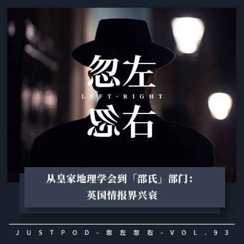
🎧 点击上方图片，跳转到「JustPod」小程序收听本期节目
本期简介
本期《忽左忽右》继续前两期的谍海轶闻系列，从情报界鄙视链的下游来到了鄙视链的最顶端，讲讲英国情报界。英国情报界拥有非常悠久的发展历史，同时也因为大众流行文化的关系，他们在大众领域也得到了广泛的传播。
本期话题成员：
程衍樑（新浪微博：@GrenadierGuard2）
沙青青，上海图书馆历史文献中心副主任（豆瓣ID：BBpanda）
节目导读旨在对节目中出现的重要人物、组织、事件、书籍以及影剧进行简单的介绍和总结，供听众和读者延伸阅读和拓展。
0 1人物
弗朗西斯·沃尔辛厄姆
（Walsingham,Francis 1532-1590）
英格兰政治家，曾任伊丽莎白一世的首席秘书，并在整个欧洲建立了间谍网，是伊丽莎白一世当政时期重要的情报搜集者。长于外交，其语言知识和组织间谍活动的能力在推行伊丽莎白女王外交政策方面具有无可估量的作用。
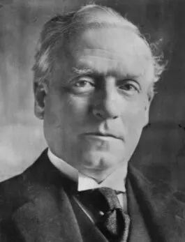
赫伯特·亨利·阿斯奎斯
（Asquith，Herbert Henry，1852-1928）
英国自由党政治家，曾任内政大臣及财政大臣，1908年至1916年出任英国首相，限制上院权利的1911年议会改革法案的主要促成者，第一次世界大战头两年的英国领导人，大战爆发后两年由劳合·乔治接任首相。在晋为贵族以前，他通称为H·H·阿斯奎斯（H. H. Asquith），在1925年他获封伯爵，晚年遂以牛津勋爵（Lord Oxford）为通称。
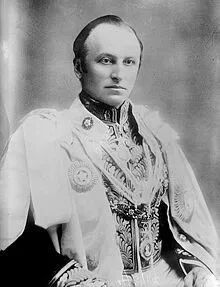
乔治·寇松
（George Nathaniel Curzon，1859-1925）
英国政治家，曾任在1899-1905年间担任印度总督，因在印度分割孟加拉，用兵西藏，划分苏波边界的“寇松线”而闻名。
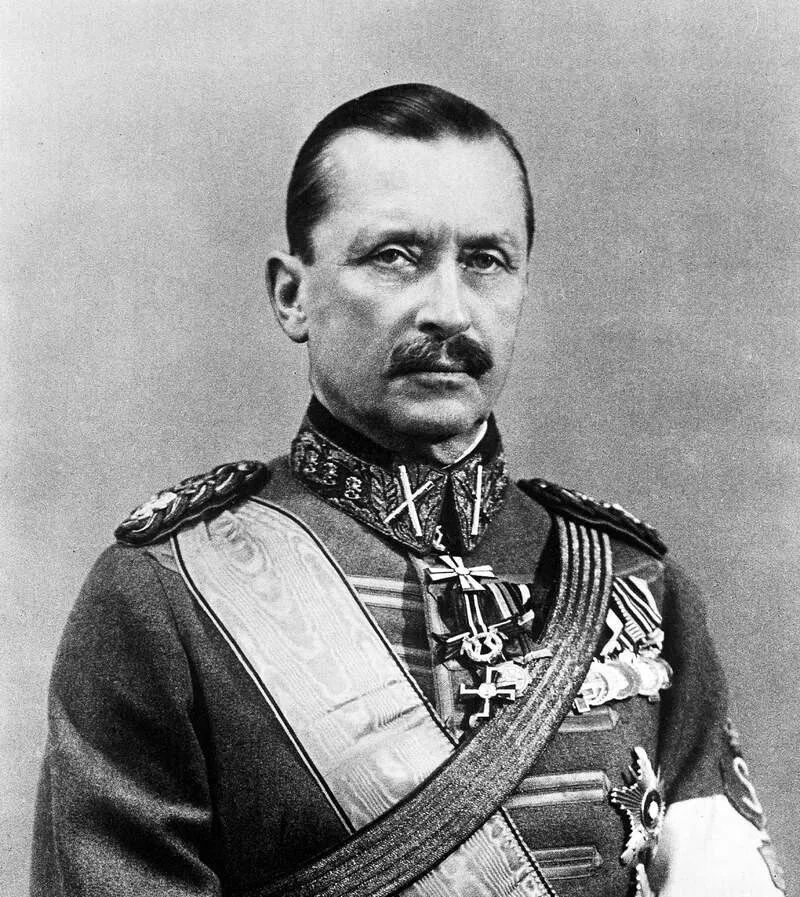
卡尔·古斯塔夫·曼纳海姆
（Carl Gustaf Emil Mannerheim，1867-1951）
芬兰近现代军事、政治人物。曼纳海姆早年在沙俄军队中服役，1917年回到芬兰，曾担任芬兰军事委员会主席兼自卫军总司令（白军领袖）、芬兰摄政兼最高统帅、芬兰国防委员会主席、芬军总司令，指挥抵御苏联侵略的“冬季战争”，保证了芬兰的独立。1944年8月当选为芬兰第6任总统总统（1944至1946年）。1951年在瑞士洛桑逝世，终年84岁。
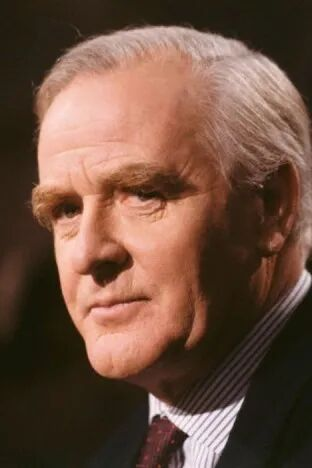
约翰·勒卡雷
（John leCarre，1931-）
原名戴维·康威尔（David Cornwell），1931年出生于英国普尔，全球20世纪最著名的间谍小说家，五六十年代他曾在英国军情五处（MI5）和军情六处（MI6）工作。1963年发表间谍小说《冷战谍魂》（又译《柏林谍影》），获得英国金匕首奖和美国埃德加·爱伦·坡奖，成为他最著名的代表作。
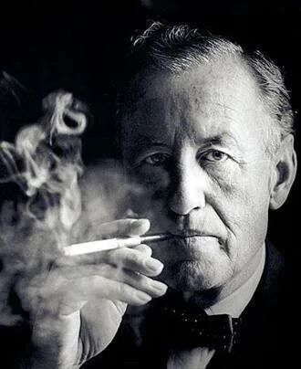
伊恩·弗莱明
（Ian Fleming，1908-1964）
英国小说家、特工，1908年生于英国伦敦，1953年以自己的间谍经验创作詹姆斯·邦德系列第一作。
“剑桥五杰”
（Cambridge Five）
克格勃的重要外国特工，五人分别为唐纳德·马克林，盖伊·伯吉斯，哈罗德·金·菲尔比，安东尼·布兰特，约翰·克恩克罗斯。克格勃始终认为这五名来自剑桥的间谍是那时招募来的最实干的优秀外国间谍，他们虽然出身贵族，但是却是最坚实的共产主义信仰者。
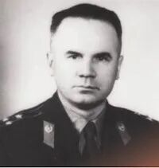
奥列格·潘可夫斯基
(Олег ВладимировичПеньковский, 1919-1962)
苏联间谍，冷战期间为美国和英国提供大量情报，特别是“古巴导弹危机”期间向美国提供的情报为迫使美国让步换取苏联撤出起了关键作用。1962年遭到逮捕，于次年中期，经审判判定有罪后被枪决。
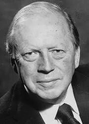
艾雷·尼夫
(Airey Neave, 1916-1979)
英国国会议员。第二次世界大战结束后，他曾在纽伦堡审判的国际军事法庭任职，其后又在军情九处任职。曾经是撒切尔夫人的重要亲信，在1979年遭到汽车炸弹袭击身亡。爱尔兰民族解放军表示对此事件负责。
鲍里斯·阿布拉莫维奇·别列佐夫斯基
（Бори́с Абра́мович Березо́вский，1946-2013）
曾是俄罗斯的金融寡头、政府官员、工程师和数学家。别列佐夫斯基在叶利钦时代国有资产私有化时期积累了巨大财富，后扶植普京上台，但普京没有像叶利钦一样给予其回报，他转而反对普京，被迫流亡英国，2013年离奇死亡。
邓葆光
（1908—2003）
湖北省黄安县人，国民党军统少将，1934年考入日本中央大学，回国后加入国民党军统局。抗日战争爆发后，被戴笠委以重任；1941年邓葆光依据看到的一则“日本将以橡胶换取苏联的木材”报道，在世界上第一个预测日本将偷袭珍珠港；1945年抗战胜利后任上海敌产处理局逆产组长，负责接收日本人及汉奸的数十万册书籍和档案；1949年新中国成立后，邓葆光将这批古籍交到共产党手中；1955年被诬陷入狱，长期遭受关押；1980年平反，后任上海市人民政府参事室参事、全国政协委员。2003年因病逝世。

0 2机构
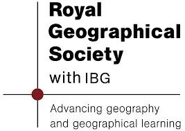
皇家地理学会（RoyalGeographical Society (with the Institute of British Geographers)）是为促进地理学发展而于1830年在英国设立的一个学会。该学会在地理学占有重要的位置。皇家地理学会支援地理学研究、教育及野外考察，也赞助过多位探险家。皇家地理学会发行的杂志是The Geographical Journal。
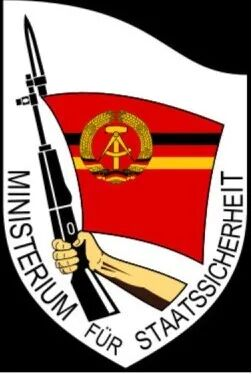
斯塔西（Stasi），前东德国家安全部，曾经是世界上比较强大的情报机构，其正式名称为国家安全部（Ministeriumfür Staatssicherheit），全称是“德意志民主共和国国家安全部”，成立于1950年2月8日，总部设在东柏林。史塔西被认作当时世界上最有效率的情报和秘密警察机构之一。斯塔西成立宗旨是担任东德的政治警察，负责搜集情报、监听监视、反情报等业务。
爱尔兰共和军(Irish Republican Army，简称IRA)，成立于1919年，总部设在都柏林，成员分布于南北爱尔兰。爱尔兰共和军是由旨在建立独立爱尔兰共和国的民族主义军事组织“爱尔兰义勇军”改编而成，与驻在爱尔兰的英军作战，长时间通过暴力活动实现政治诉求，被许多国家视为恐怖组织。
新芬党（爱尔兰语：Sinn Féin，意为“我们自己”），爱尔兰（北爱尔兰和爱尔兰共和国）政党，由阿瑟·格里菲斯建立于1905年。新芬党是爱尔兰共和军的正式政治组织，主张建立一个包括目前的爱尔兰共和国和北爱尔兰，囊括整个爱尔兰岛的共和国。新芬党目前同时参与爱尔兰共和国和北爱尔兰议会选举，且均有议会代表。在北爱尔兰，新芬党与主张维持英国管治的民主统一党和阿尔斯特统一党对立。此外，新芬党也参加英国下议院选举，并取得议席，但该党对威斯敏斯特采取“弃权主义政策”，其当选议员一直拒绝向英国君主宣誓效忠，因此无法参加英国议会会议，但头衔依然存在。
0 3事件
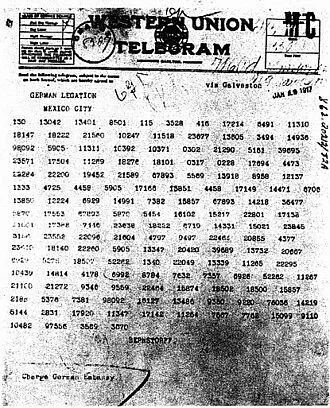
齐默尔曼电报（又译齐默尔曼字条、森马门电报、齐默曼电报、司马文电报，德语：Zimmermann-Depesche）是一份由德意志帝国外相阿图尔·齐默尔曼于1917年1月16日向德国驻墨西哥大使海因里希·冯·埃卡特发出的加密电报。电报内容建议墨西哥可以与德国结成对抗美国的军事联盟，但被英国40号办公室截获。该电报内容于1917年3月1日被公开后，引起美国各界的愤怒，促使同年4月6日美国向德国的宣战。
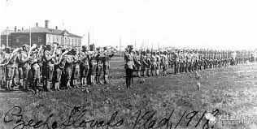
捷克斯洛伐克军团叛乱是苏俄国内战争和外国武装干涉期间，协约国策划的一次武装叛乱。捷克斯洛伐克军团于1917年4-6月在俄国组建，由第一次世界大战中被俄国俘虏的原奥匈帝国军队中的战俘以及侨居俄国的捷克斯洛伐克人组成（约5万人）。1918年3月26日，苏维埃政府决定将该军团调往符拉迪沃斯托克（海参崴），并议定待军团将其基本武器装备移交给当地苏维埃政府后，从那里将其送往西欧。1918年5月下旬，捷克斯洛伐克军团在由奔萨调往符拉迪沃斯托克的途中，受协约国煽动，发动叛乱。

0 4书籍
滑动查看更多
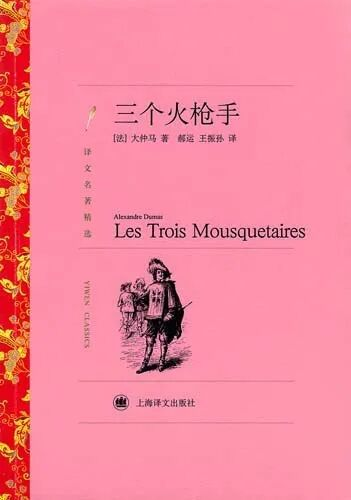
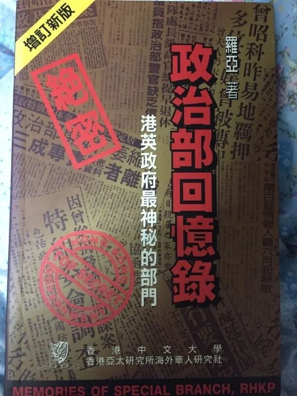
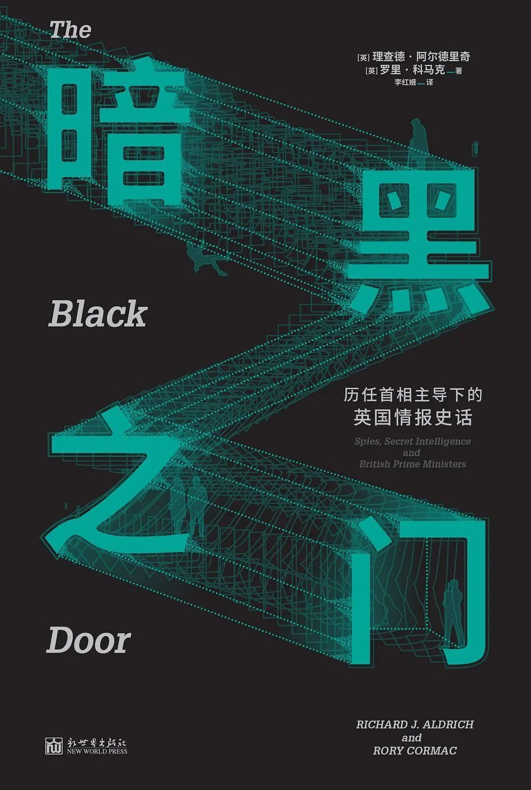
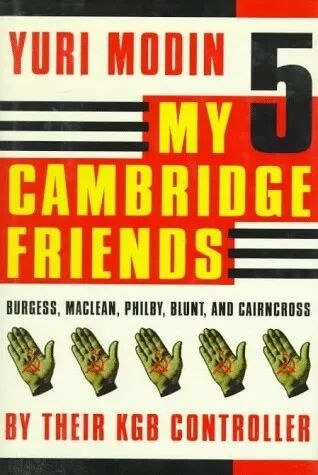
滑动查看更多

0 5影剧
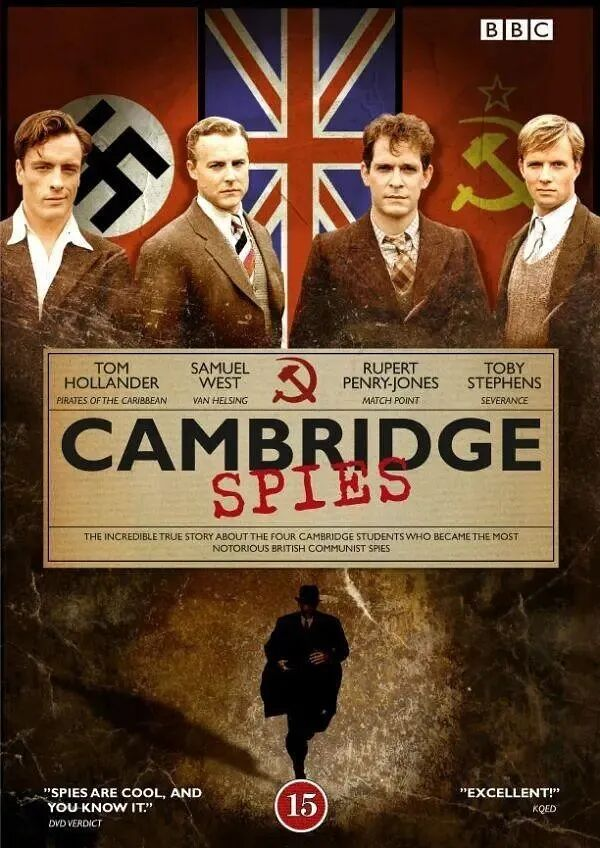
《剑桥风云》
《锅匠，裁缝，士兵，间谍》
《英伦对决》
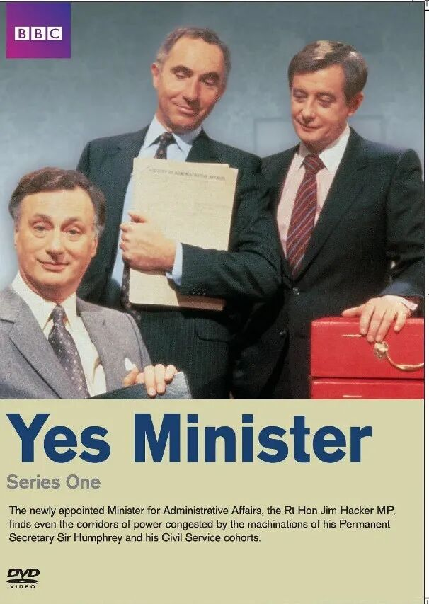
《是，大臣》
《贴身保镖》
《谍影巾帼》
《寒战》
- End -

苹果播客 | Spotify | 小宇宙App | 网易云音乐喜马拉雅 | 蜻蜓 FM | 荔枝 FM央广云听 | 芒果动听 | 阿基米德搜索
『忽左忽右』
订阅收听

忽左忽右公众号
微信号：leftright2018
新浪微博：@忽左忽右leftright
联系我们：contact@justpod.fm
扫码关注我们
帮我点个“在看”呗